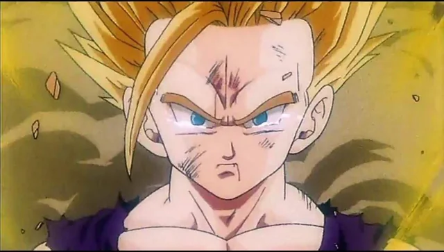

A friend is reading Manacled, already a Romantasy classic, and shared this excerpt:
To quote a very different fanfic: “Too many competing objections, that was the problem.1” But the next day, the excerpt continued nagging at my attention. I think there are two things I like about this. The first is its total lack of shame. (Bad in some contexts, good in others.) The second is that it’s pulling at the dark threads of Harry Potter — charismatic psychopaths often being the best fleshed-out characters (Bellatrix), Rowling’s obviously conflicted attitudes towards class and status in Britain, and the ways in which violence and attraction might go hand in hand (Hermione slapping Draco in PoA) — and seeing where they might go.
This particular journey is one I can’t go on, alas. But noticing these undercurrents and swimming in them is a great way to start a fanfic. My own efforts there began with frustration that no one in-universe noticed the gigantic strategic liability Voldemort opened when he tabooed his own name.2 Pulling on this thread went in a sadder, more grieving direction than I expected, and the book I came up with doesn’t work. But it was a joy to write, and it started by pulling on the dark thread.
Likewise with my all-time favorite act of fanfiction, Team Four Star’s Dragon Ball Z Abridged. DBZA starts out very amateurish (which I don’t mean as an insult) and juvenile (which I do). But at some point the production values go way up, and by the time we get to the Android saga, it’s a much better show than DBZ ever was. And then comes the Cell saga, which I think is a masterpiece. In the original, 11-year-old Gohan discovers his hidden inner power and saves the day, and because the show is aimed at pre-teens, it doesn’t interrogate this very deeply. But in DBZA, TFS noticed that what’s actually happening on screen is that Gohan’s father, Goku, manipulates events, and his son, to the point where Gohan has a mental breakdown and goes on a murderous rampage.

In the original, after it happens, he’s silent. In DBZA — and this is one of my favorite scenes of any movie or TV show — he says:
Cell. You don’t get it. I hate this. The vibrations through my fists on contact. The taste of blood in my mouth. The sound of my heart in my ears. I hate it. I always have. But right now. in this moment. The only thing I hate more than it… is you…Because you were right about me. I was a coward. Scared of what would happen if I snapped. Afraid that, if I lost it this time. I’d never come back. That I’d finally kill someone. But I’m not scared anymore, Cell. Because there’s no point in being afraid of the inevitable.
Poor Gohan. He just wanted peace. And what DBZA understands is that Goku is the villain of this story. Goku put his son in this spot because he was trying to find a successor to his own role as guardian of the Earth. But Piccolo is the dad who loves Gohan, and he tries desperately to get Goku to understand what’s wrong with this plan:
PICCOLO: GOHAN DOESN’T LIKE FIGHTING, YOU MORON!!
GOKU: (in disbelief) Whaaaat? Noooo… (Gohan is still heard screaming in pain) I mean… right?
PICCOLO: Have you ever, in your life, actually asked your son what he likes?
GOKU: Umm… but he went in that Chamber with me for that whole year.
PICCOLO: Because he wanted to spend time with you–his father–the man who spends half his time training, and the other half dead! SOMETIMES BOTH!
I can see why people who aren’t deep in DBZ nostalgia might not be able to grok the tragedy that’s unfolding here through the haze of the silly show about aliens fighting other aliens to save the earth. But I see it. TFS pulled at the dark threads, and out came something Shakespearean about bad dads, all while maintaining steadfastly faithful to the original visual material. It’s a magnificent accomplishment.
Authoring derivative works is a wonderful leisure activity. (Better than endless scrolling anyway!) Perhaps you already love a well-fleshed-out fictional universe that’s done the hard work to create characters and world. But I bet there are some loose threads. Did you notice that Neville’s great-uncle once dropped him out an upstairs window, and that no one seems to care? That neither the Galactic Republic nor the Jedi Order was worth saving? That the goblins of The Hobbit really don’t seem like such bad chaps, and maybe they have good reason to hate dwarves and elves?
Pull those threads. I want to see what happens.
My first objection is to the use of ‘aristocratic’, and my second is the incongruity between ‘indolent’ and ‘assassin’s blade.’↩︎
In case we haven’t talked about this: in Deathly Hallows, the Death Eaters set up a curse where anyone who says ‘Voldemort’ gets a visit from the goon squad, because only members of the opposition, e.g. Dumbeldore, ever speak his name. Now imagine that American wizards (who, because they’re American, probably have magic “guns that shoot bullets around corners and shit,” as a hiking companion once memorably put it) discover this. One of them realizes that you can now summon Voldemort’s foot soldiers to any location you want at any time, and calls his friends to say “you want to set some traps?”↩︎